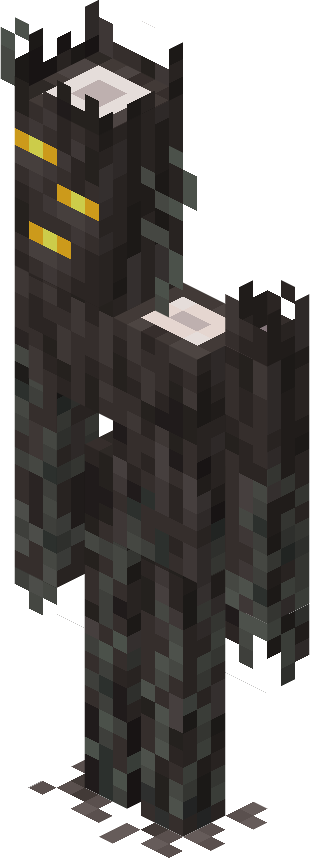
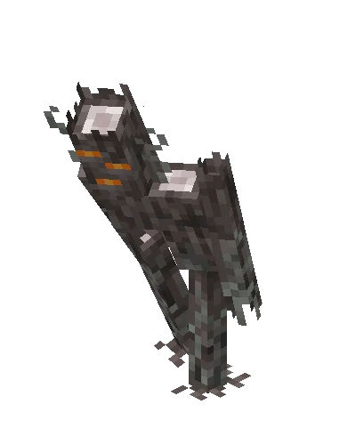
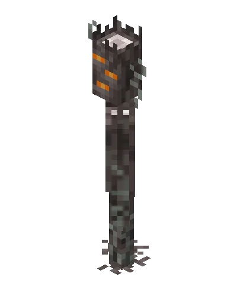

Le Creaking



Le Creaking
Le Creaking qui marche
Le Creaking qui attaque
Le Creaking est une entité hostile qui rôde la nuit près des coeurs de grinceur. Cette créature inflige 3 coeurs de dégâts aux joueurs soit 6 points de vie, mais devient immobile quand on la regarde directement. Ceci peut être évitée si le joueur porte une citrouille sculptée sur la tête. Bien qu'il ne laisse aucun butin à sa mort, le Creaking contribue à l'atmosphère sinistre du Jardin pâle par son comportement unique et ses animations.
 1.21.4
1.21.4